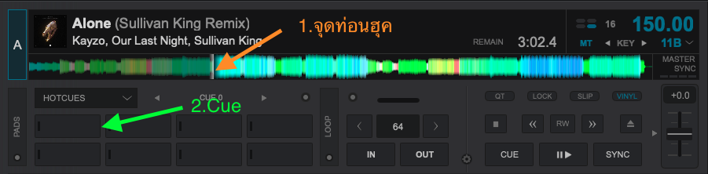
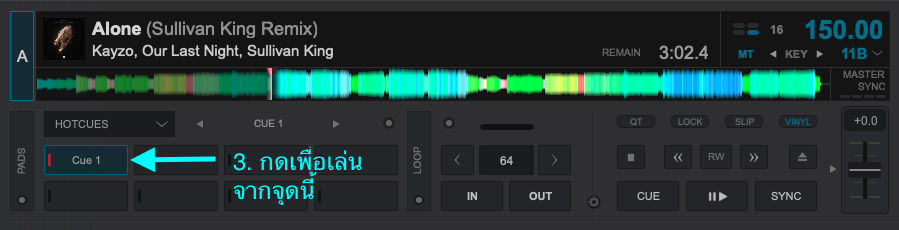

Sound
ดูรายละเอียดการติดตั้งและการจัดการอุปกรณ์เสียง
Slide
ดูรายละเอียดเกี่ยวกับการเตรียมและการส่งสไลด์
Sound
- ติดตั้ง Virtual DJ Download
- เตรียมเพลงสำหรับขึ้น-ลงช่วงต่างๆใน Function วันนั้น Download
- เตรียม Effect Download
*** มาถึง Center 17:30 - 18:00 ***
- 🗄️ Sound และ Slide ยกอุปกรณ์จาก Locker ขึ้นมาติดตั้ง
- 🖥️ ติดตั้ง Projector
- 🔈 ตั้งลำโพงทั้งสองข้างของเวที
- 🎛️ ติดตั้ง Mixer
- 🎤 ติดตั้งไมค์
- ตั้งระดับความดังในเครื่องของคอม Sound และ Slide ไว้ที่ 80%
- ทดสอบความดังของไมค์ทั้ง 4 ตัว รวมถึงเสียงคอม Slide และ คอม Sound
- ทดสอบเอา Slide ขึ้นโปรเจคเตอร์รวมถึงคลิปทุกช่วงพร้อมเปิดเสียง
โดยหลังลำโพงปรับ CH1 ไว้ที่ 12 นาฬิกา และ MAIN ไว้ที่มากที่สุด
=== Concept การทำ Sound ===
- 🌟 เมื่อสละเวลามาทำ Sound แล้ว ให้ Focus หน้าที่ Sound เป็นหลักก่อน
- 🔈 ใช้เพลงที่ตัวเองเปิดแล้วปรบมือตามได้แล้วสนุก เช่น แนว EDM หรือ Dubstep
- 🔈 เลือกเพลงที่เปิดฟังในหูฟังแล้วความละเอียดสูง ไม่ซ่าและไม่หยาบ
- 🔈 พยายามเตรียมเพลงไว้ล่วงหน้า 2 เท่าของจำนวนช่วง หรือมากกว่านั้นไว้ก่อน
- 🔈 effect หากินคือ ตบมุก วิ้ง บริ้ง สวรรค์ ว้าว โอ้ ย้าฮู่ OK
- 🔈 หลีกเลี่ยง effect คำหยาบหรือทำให้บรรยากาศลบกว่าเดิม
- 🔈 กด effect เกินดีกว่ากด effect ขาด ไม่ต้องกลัวกดเยอะไป
=== เทคนิคยิบย่อย ===
- แนะนำให้ใช้ Layout ของ Virtual DJ เป็น Performance
- การ Mark จุดท่อนฮุคด้วยการ Cue
- ให้เลื่อนเพลงมาที่จุดที่ต้องการ
- กดที่ช่องไหนของ CUE ก็ได้เพื่อ Mark จุด 
- ตอนใช้ก็กดที่ช่องที่ CUE ไว้เพื่อเล่นเพลงจากจุดนั้นได้เลย 

Slide
Macbook หรือ Notebook ที่ไม่มีช่อง HDMI ต้องมี adapter แปลงมาด้วยทุกครั้งที่ทำหน้าที่
- สร้าง Folder ของ Center สัปดาห์นั้นเช่น CT BKK 17/01/2025 ใน Link
-
ส่ง Checklist ลงในกลุ่ม Center Manager โดยแก้เป็นข้อมูลของสัปดาห์นั้นๆ รวมถึง link drive เช่นกัน ตามตัวอย่าง
📌SLIDE CT BKK 17/01/2025 📌 ‼️Deadline วันพฤหัสบดี 16/01/2025 ก่อน 23.59 น.‼️ 🌟รบกวนอ่านรายละเอียดก่อนส่งสไลด์🌟 - ❗ขนาดสไลด์ 16:9 นะครับ❗ - ส่งเป็นไฟล์ powerpoint เท่านั้น **ไม่รับ pdf นะครับ** ปล.ให้บันทึกเป็นรูปภาพก่อนแล้วเอามาแปะใน powerpoint เพื่อป้องกันตัวอักษรเคลื่อนครับ ==================== 🎥 คลิปเปิด CT : ==================== 🎤 MC : ==================== 🎬คลิปเปิด Product : ==================== 🫧 Products : ==================== 🎬คลิปเปิด Rising star: ==================== ⭐Rising Star : ==================== 🎬คลิปเปิด Technique : ==================== 💎 Technique : ==================== 🏞️ Poster Next Week : ==================== ***ใครส่งสไลด์แล้วรบกวนติ๊ก ✅ หลังชื่อตัวเองด้วยนะครับ ขอบคุณครับ🙏🏻*** CENTER BKK 17/01/2025 https://drive.google.com/drive/folders/161ncpxZ9xDmVSgq-k4Xv0icapOeUhhLv - Download 🎬 คลิปเปิด CT Link
- Download 🎬 คลิปเปิดช่วงและ Slide เนื้อหาต่างๆรวมถึง 🏞️ Poster ในสัปดาห์นั้นๆ ตาม 🗂️ ที่สร้างไว้ในข้อ 1
- Download RULES & EVENTS Link
- สำหรับ 👑 Hall of Fame 👑
- Download 🎬 คลิปเปิด Moving Up Link
- Download Slide ตาม 🗂️ ที่สร้างไว้ในข้อ 1
จากนั้นสร้าง Folder แต่ละช่วงตามเนื้อ Center สัปดาห์นั้นๆ เช่น
🗂️ MC
🗂️ Media
🗂️ Product
🗂️ Rising Star
🗂️ Technique
โดยทีม Media จะอัปโหลดทั้ง 🎬 คลิปเปิดแต่ละช่วงรวมถึง 🏞️ Poster ไว้ใน 🗂️ Media ที่สร้างไว้ในข้อ 1
*** มาถึง Center 17:30 - 18:00 ***
- 🗄️ Sound และ Slide ยกอุปกรณ์จาก Locker ขึ้นมาติดตั้ง
- 🖥️ ติดตั้ง Projector
- 🔈 ตั้งลำโพงทั้งสองข้างของเวที
- 🎛️ ติดตั้ง Mixer
- 🎤 ติดตั้งไมค์
- ตั้งระดับความดังในเครื่องของคอม Sound และ Slide ไว้ที่ 80%
- ทดสอบความดังของไมค์ทั้ง 4 ตัว รวมถึงเสียงคอม Slide และ คอม Sound
- ทดสอบเอา Slide ขึ้นโปรเจคเตอร์รวมถึงคลิปทุกช่วงพร้อมเปิดเสียง
โดยหลังลำโพงปรับ CH1 ไว้ที่ 12 นาฬิกา และ MAIN ไว้ที่มากที่สุด